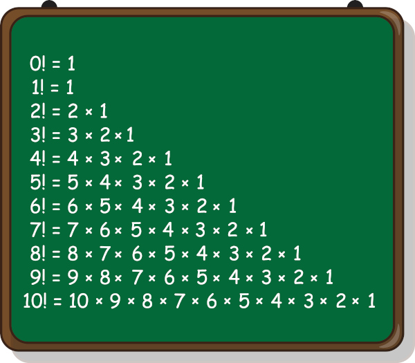

O fatorial é uma operação muito importante para o estudo e desenvolvimento da análise combinatória.
Na matemática o número seguido do símbolo de exclamação (!) é conhecido como fatorial, por exemplo, x! (x fatorial).
Conhecemos como fatorial de um número natural a multiplicação desse número por seus antecessores com exceção do zero, ou seja: n! = n · (n-1) · (n-2) … 3 · 2 · 1
